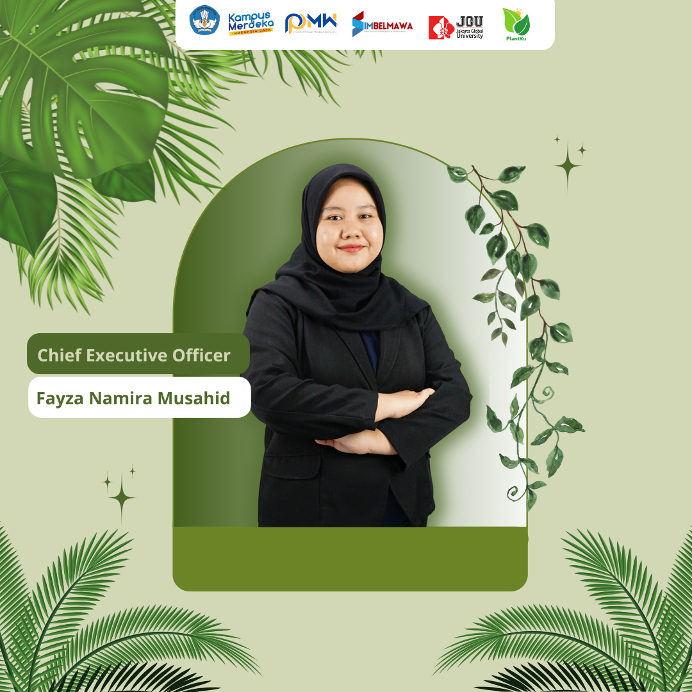
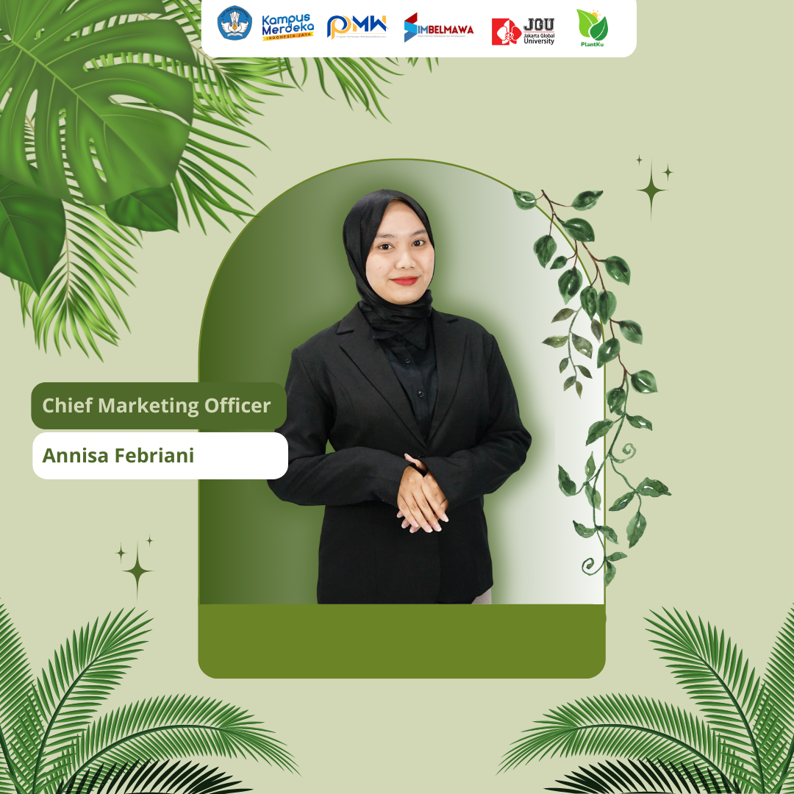
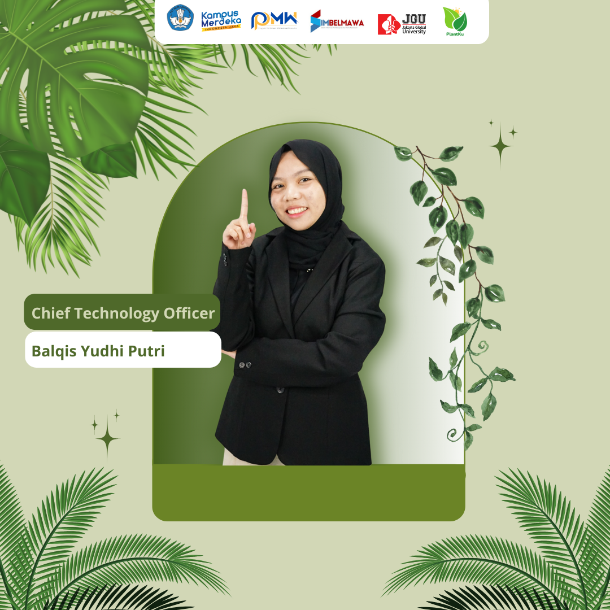
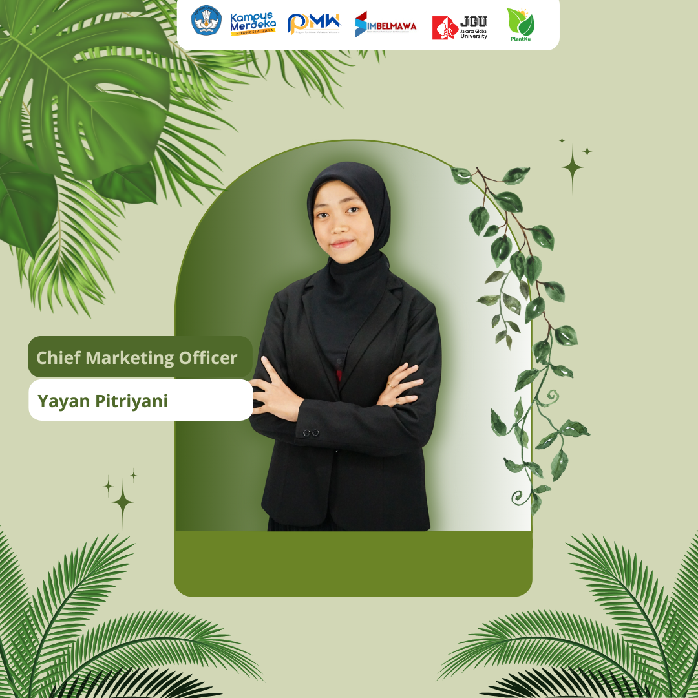
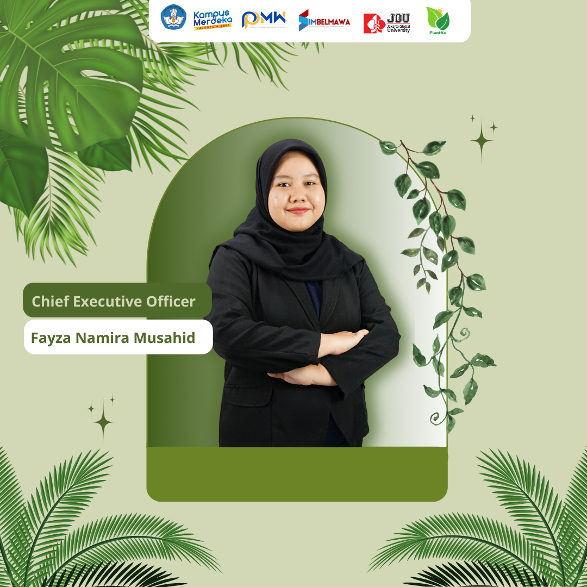
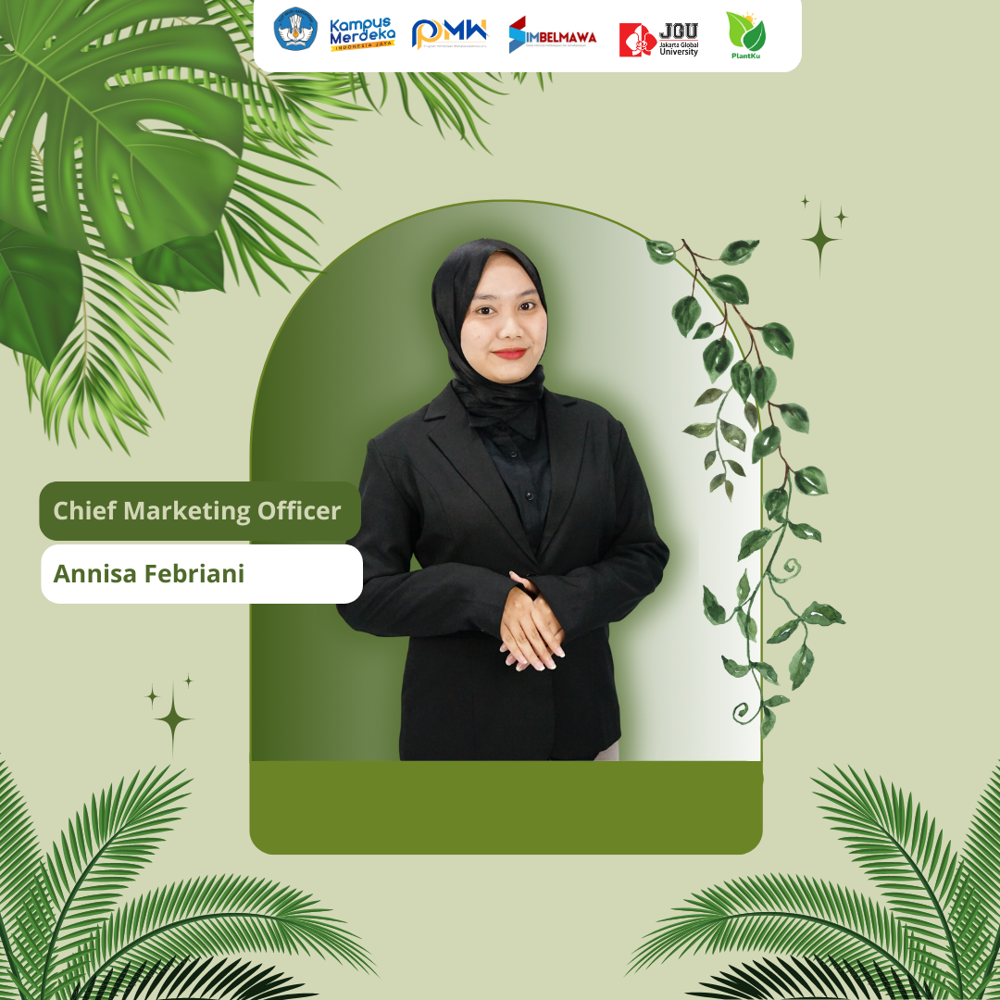
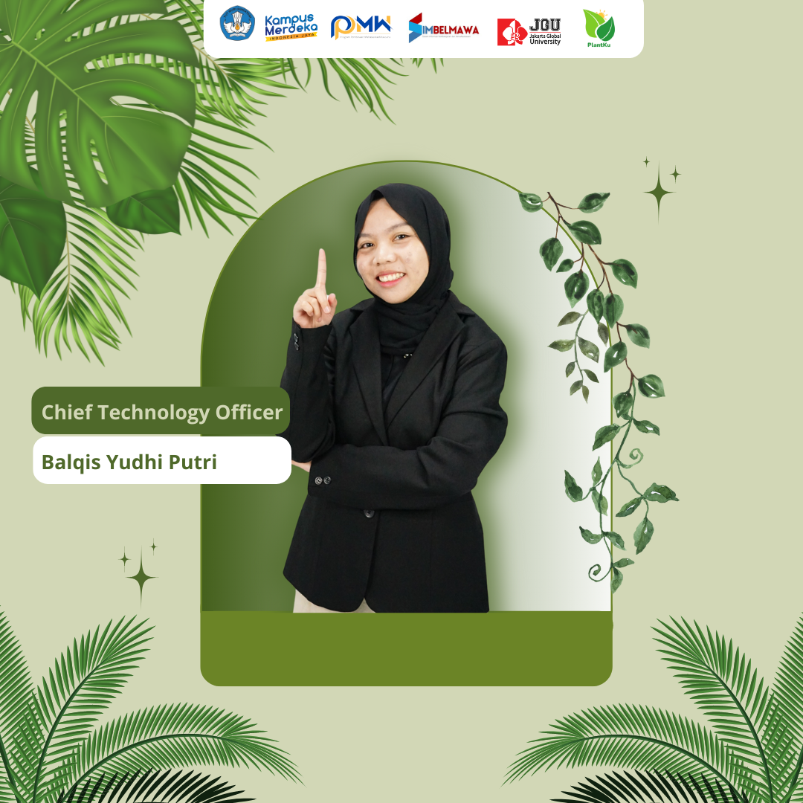
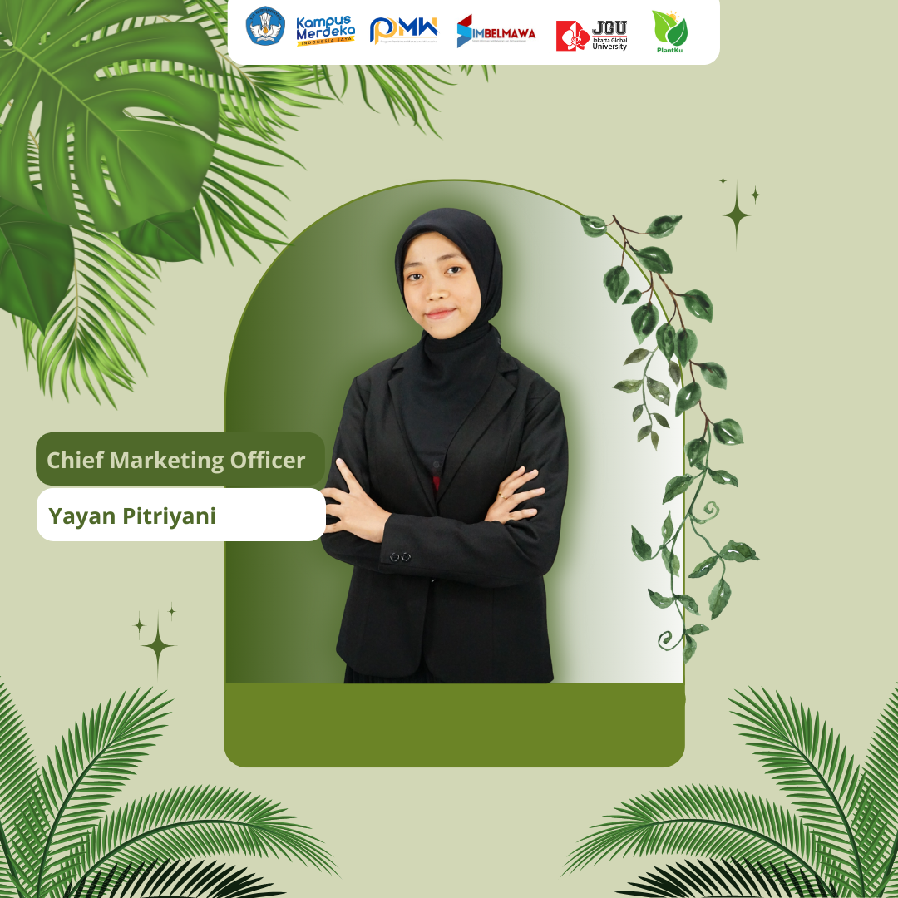

Visi
Menjadi aplikasi pertanian digital terdepan yang memberdayakan setiap individu dalam merawat tanaman dengan mudah dan efisien, serta berkontribusi pada keberlanjutan lingkungan melalui inovasi teknologi yang cerdas dan ramah pengguna.
Menjadi aplikasi pertanian digital terdepan yang memberdayakan setiap individu dalam merawat tanaman dengan mudah dan efisien, serta berkontribusi pada keberlanjutan lingkungan melalui inovasi teknologi yang cerdas dan ramah pengguna.
Introducing our team from Jakarta Global University
Lihat selengkapnya > 






